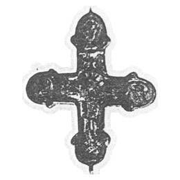

Catalog › CE-0135 · KHA1900-273b
Encolpion de bronz emailat cloisonné, cu Răstignirea
XI в. (1001–1100) · loc necunoscut · Muzeul Academiei Teologice din Kiev (față); colecția V. B. Antonovici (revers)
double-sided reliquary cross (enkolpion), bronz; XI в. (1001–1100); find spot unknown; kept at Muzeul Academiei Teologice din Kiev (față); colecția V. B. Antonovici (revers).


Identificare
- Categorie
- Encolpion bivalv (relicvar)
- Material
- Bronz
- Tehnică
Iconografie
- Descriere avers
- Pe față, în mijloc, Mântuitorul răstignit; de o parte și de alta și deasupra, în medalioane, trei fețe; deasupra capului Mântuitorului inscripția ІС ХС. Decor emailat cloisonné.
- Descriere revers
- Reversul se află în colecția profesorului V. B. Antonovici de la Universitatea din Kiev și este decorat cu cruci ale Sf. Andrei emailate, în medalioane.
- Inscripții
- ІС ХС
Datare și atribuire
- Datare
- XI в. (1001–1100)
- Centru
- Necunoscut
Descoperire
- Context
- Colecție (fără context)
- Coordonate
- 50.4536° N, 30.5164° E
- Precizia locului
- Loc de păstrare (loc de descoperire incert)
Păstrare și referințe
- Colecție
- Muzeul Academiei Teologice din Kiev (față); colecția V. B. Antonovici (revers)
- Bibliografie
- B. I. și V. N. Khanenko, Древности русскія. Кресты и образки, вып. II (Собраніе Б. И. и В. Н. Ханенко), Kiev, 1900 [Khanenko 1900], cat. nr. 273 б., Tabl. XXIII, reprodusă la Табл. XXIII, fig. 273 б. (planșa de la p. 26 a PDF-ului).
- Figura
- Табл. XXIII, fig. 273 б.
- Planșe
- Khanenko 1900, Табл. XXIII (planșă fără paginație tipărită; p. 26 în PDF)
- Observații
- Datare după Khanenko: XI в. Fața aparține muzeului Academiei Teologice din Kiev; reversul se află în colecția lui V. B. Antonovici. Ambele jumătăți sunt descrise în culegerea lui Leopardov, seria I, fasc. IV, și seria II, fasc. I. Nu se indică locul de descoperire. Locul descoperirii nu e cunoscut cu precizie; punctul de pe hartă marchează locul de păstrare (Muzeul Academiei Teologice din Kiev), nu locul descoperirii. Coordonate: nu sunt date în sursă.
Citare: Corpus Encolpiorum, CE-0135, Encolpion de bronz emailat cloisonné, cu Răstignirea, --root/piese/KHA1900-273b/ (accesat 2026-10-17).